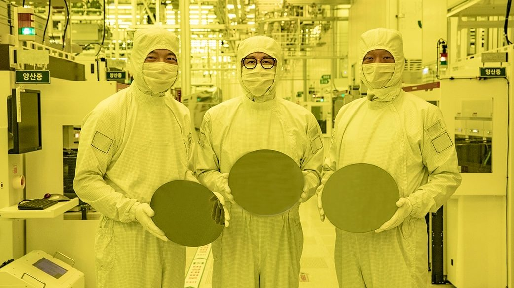
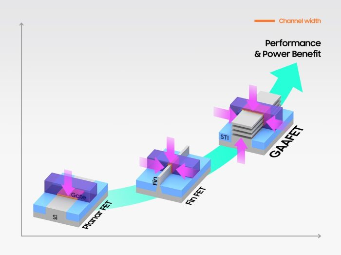
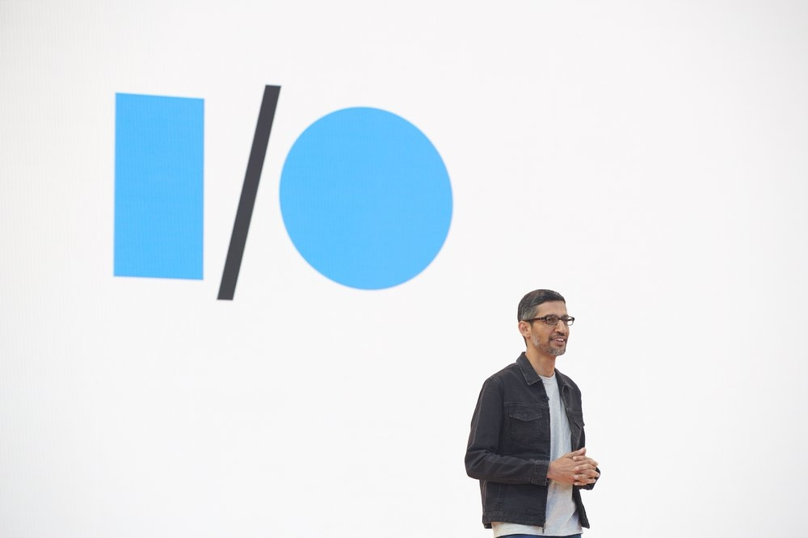

Samsung quer produzir chips com apenas 1,4 nanômetro até 2027

A Samsung não quer ficar de fora da corrida pelo chip com a menor tecnologia de fabricação. A companhia confirmou que pretende produzir unidades de apenas 1,4 nanômetro (nm) a partir de 2027, característica que os fará combinar alto desempenho com ampla eficiência energética.
Quem deu informações sobre a meta é Jeong Gi-Tae, vice-presidente da Samsung Foundry, divisão de semicondutores da companhia. Ao The Elec, o executivo contou que, para chegar à tecnologia de 1,4 nm, a Samsung utilizará transistores do tipo GAA (Gate All Around), confirmando os planos revelados em 2022.

Finalmente, a tecnologia de 1,4 nanômetro
Se os planos da Samsung funcionarem, os primeiros chips com processo de 1,4 nanômetro (SF1.4) serão produzidos pela empresa em 2027. Para tanto, a Samsung Foundry desenvolverá transistores com estrutura de quatro nanofolhas. As tecnologias de 3 e 2 nanômetros terão transistores com três nanofolhas empilhadas.
Com um número maior de nanofolhas, mais corrente flui pelo transistor, fator que pode melhorar o desempenho do chip e otimizar o consumo de energia.
Será um feito marcante se a Samsung conseguir viabilizar o processo de 1,4 nm, não só pelos benefícios esperados, mas também porque essa medida corresponde a uma escala na qual cada transistor tem largura equivalente a apenas três átomos de silício.
De olho na concorrência
A redução da escala de nanômetros é perseguida pela indústria para otimizar o desempenho e o consumo energético dos chips. A Samsung tem investido fortemente no segmento para não ficar para trás nessa corrida. Não é exagero, pois Intel e TSMC também pretendem adotar transistores GAA a partir de 2024, como lembra o Tom’s Hardware.
De acordo com a ASML, companhia que desenvolve máquinas para fabricação de chips, transistores do tipo GAA (ou GAAFET) têm estrutura de nanofolhas empilhadas. Isso permite que a porta que modula a condutividade elétrica envolva todos os lados do canal do transistor por onde flui corrente.
Essa abordagem reduz o vazamento de corrente. Com isso, pode-se fabricar transistores muito pequenos e, ao mesmo tempo, aumentar o nível de corrente que passa por eles.
Chips de 3 e 2 nm virão antes
Transistores GAA são adequados para chips com processo igual ou inferior a 3 nm. É por isso que a Samsung pretende chegar à tecnologia de 1,4 nm de modo progressivo.
A companhia começou em 2022, quando anunciou o processo SF3E, que usa transistores GAA para produzir chips de 3 nm. Eles devem ser fabricados em maior escala a partir de 2024.
Em 2025, a Samsung planeja introduzir a tecnologia SF3P, versão otimizada de seu processo de 3 nm. Como etapa seguinte, a empresa deve começar a produzir chips de 2 nm (SF2) ainda em 2025 ou em 2026, também com base em transistores GAA.
Google Maps mostra aviões que nunca existiram estacionados em aeroporto americano
Um usuário do fórum do site Airliners.net fez uma interessante descoberta enquanto navegava na plataforma Google Maps ao encontrar aviões suspeitos, que nunca existiram, estacionados no Aeroporto de Detroit. Ao observar os portões A29 e A31 do aeroporto, o usuário de nome Brick notou algo fora do comum: dois Boeing 717 estacionados com as cores da Lufthansa, companhia aérea que nunca operou esse modelo de aeronave.
O aeroporto é um grande hub da Delta, mas a presença de aviões de outra companhia levantou questionamentos. Com mais de 20 anos de experiência na indústria de mapeamento, o usuário afirmou ter conhecimento sobre DEMs, retificação de imagens e mosaico de fotos, mas mesmo assim não conseguiu explicar a presença dos aviões.
De acordo com o usuário, isso está fora de sua área de especialização e ele pediu ajuda para entender o caso. Ao pesquisar sobre o processo de captura de imagens do Google Maps, os foristas comentaram que o serviço utiliza imagens de satélite para criar mapas detalhados. Esse método consiste em unir imagens de alta resolução obtidas por satélites que orbitam a Terra.
A presença de um avião em uma imagem não é algo incomum, já que o serviço captura imagens em um momento específico e pode registrar aeronaves que estejam sobrevoando a área ou estacionados. No entanto o que chama atenção neste caso é a presença de um avião que nunca foi operado pela companhia aérea alemã.
Google paga mais para empresas que atualizam o Android
Em depoimento, CEO do Google revela que divisão de receitas prevê fatias maiores para fabricantes que disponibilizam updates de segurança
Em mais uma revelação sobre os bastidores da indústria feita aos tribunais, Sundar Pichai, CEO do Google, contou que o acordo da empresa com as fabricantes de celulares prevê pagamentos maiores para quem oferece atualizações de segurança do Android.
Pichai trouxe essa informação na terça-feira (31), ao ser questionado sobre os acordos do Google com as fabricantes de smartphones Android, como Samsung, Motorola, HTC e outras.

O sistema operacional tem o Google como buscador padrão, obviamente, além de outros componentes ligados a serviços da empresa, como a Play Store e os Play Services. As fabricantes recebem uma parte das receitas da busca.
Pichai explicou que essa fatia é maior para quem disponibiliza as atualizações de segurança do Android. O CEO reconheceu que as empresas, às vezes, têm outras prioridades. “[Elas] focam mais em desenvolver a próxima versão [de um smartphone], as atualizações custam caro… então elas, às vezes, optam por um em detrimento do outro”, comentou.
A velocidade das atualizações do Android parece estar mais rápida nos últimos anos. O Android 13, lançado em 2022, já é a versão mais usada do sistema operacional. Atualizações de segurança, que são as que o Google leva em conta nos contratos, podem ser instaladas mesmo em versões mais antigas do sistema.
Google é acusado de monopólio
O Google está sendo processado pelo Departamento de Justiça dos EUA. A acusação é que a empresa usa seu poder econômico para formar um monopólio no mercado de pesquisas online, impedindo o surgimento de novos concorrentes.
Os depoimentos de executivos do Google e de concorrentes, como Apple, Microsoft e DuckDuckGo, já revelaram informações bastante interessantes sobre os bastidores da indústria.
O Google, por exemplo, queria seu app pré-instalado nos iPhones. A Apple considerou usar o DuckDuckGo como padrão no modo privado do Safari. E Satya Nadella, CEO da Microsoft, diz que o Bing não é pouco usado porque é ruim, mas é ruim porque pouca gente usa.
Engenheiros desenvolvem inovadora “pele de robô”
Um novo sensor criado por pesquisadores da University of British Columbia (UBC) e do Frontier Robotics, instituto de pesquisa da Honda, tem uma estrutura bem macia, podendo servir como “pele de robô” ou para cobrir próteses. Por exemplo, aplicada à uma mão biônica, ela permite à pessoa “sentir melhor” o que está pegando.
A criação é composta principalmente de borracha de silicone, a mesma usada em efeitos especiais de filmes. Ela também dobra e enruga, assim como a pele humana.
Para responder com destreza e precisão aos estímulos táteis, o sensor usa campos elétricos fracos, parecidos com os de telas de celular. A “pele de robô” ajuda uma pessoa com prótese a segurar um ovo ou um copo de plástico com água sem esmagar ou deixar cair.
Os pesquisadores dizem que o novo sensor é simples de fabricar, inclusive em grandes quantidades e dimensionamento (para cobrir grandes áreas de superfície). Com a capacidade de detectar força na parte interna e externa, o sensor oferece uma combinação importante para o desenvolvimento de robôs voltados para o contato direto com pessoas, como explica o Dr. John Madden, autor sênior do estudo e professor da UBC.